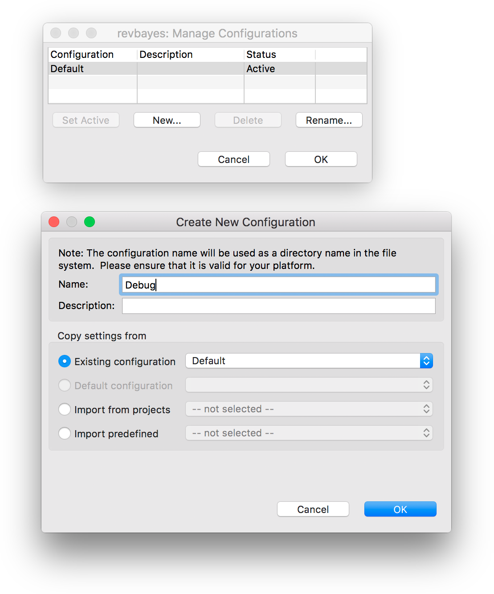

The easiest way to get started developing in RevBayes is to use an IDE such as XCode or Eclipse. You can also use your favorite text editor (e.g. vim or emacs). This page will provide some helpful tips on how to set up these development enviroments. See the Software page for instructions on how to obtain the source code.
Setting up XCode for RevBayes development
XCode is an IDE for Mac OSX. XCode does not keep track of files, so each time you open your RevBayes project in Xcode you must pull the RevBayes master branch from git & remove reference to all of the source. Eclipse Oxygen does a cleaner job of managing the files; you do not need to pull from git each time you work in it.
Set up the XCode Project
Prerequisites
- To compile RevBayes using Xcode, first install https://cmake.org/ and its https://stackoverflow.com/questions/30668601/installing-cmake-command-line-tools-on-a-mac. This is easily done using https://brew.sh/ by running
brew install cmakein terminal.
Create an Xcode project for RevBayes
- Open Xcode and in the Welcome to Xcode window, choose Create a new Xcode project.
- Click on the Cross-Platform tab at the top
- Select External Build System and name it rb (or whatever you’d like)
- Under Build Tool type the following directory
/<path-to-revbayes>/revbayes/projects/cmake/build.sh - Click Next.
Configure the build
- After clicking Next as directed above, you should see a screen that looks like this: figures/xcode-info.png
- On this screen, under Arguments type
$(ACTION) -boost true -debug true, or if you haven’t built the boost libraries in RevBayes already. If you have then type$(ACTION) -boost false -debug true. - Under Directory put
/<path-to-revbayes>/revbayes/projects/cmake/. - Add the source files by selecting the appropriate directory and going to the File pull-down menu and selecting **Add Files to
**. - This should open a screen that looks like this: figures/xcode-adding.png
- Click on Options at the button of the window, and under the Added Folders heading, select Create as Folder References, and add to the target that was created in Step 2.
- Select the following directories from the
revbayesdirectory:revbayes/src/revlanguagerevbayes/src/corerevbayes/src/libs
- Click Add.
- Select the following directories from the
- At this point, if everything has been setup correctly, you should be able to build the project. You can try by clicking on Product - Build or by using ⌘+B.
- Once revbayes has built go to Product->Scheme->Edit Scheme, it should bring a window like this: figures/xcode-exe.png
- Click on info, then go to executable and locate the newly built revbayes executable.
- Now you should be able to click the play button or ⌘+R, and you should see the revbayes command line prompt in the loading screen.
Setting up Eclipse for RevBayes development
Eclipse is a Java-based, cross-platform IDE with lots of nice features that make it convenient for RevBayes development. First, it’s cross-platform, and unlike Xcode, you can use any compiler you like (not just clang).
Prerequisites
- To compile RevBayes using Eclipse, you must install CMake and its command line tools. This is very easy if you have homebrew installed (
brew install cmake) - You must also have a C++ compiler. If you are using a Mac, you can use
clang(included with XCode), or you can installgcc(e.g. via homebrewbrew install gcc).
Installing Eclipse CDT
To start writing C++ in Eclipse, you must obtain the Eclipse CDT (C/C++ Development Tooling) package. You can download a distribution of Eclipse that comes prepackaged with CDT from the CDT Downloads page.
If you already have Eclipse installed you can go to Help > Install New Software… and enter the p2 repository URL for your version of eclipse found on the CDT downloads page. Then check the Main Features box, click Next twice, accept the User Agreement, and restart Eclipse.
Important! When you first open Eclipse, you will be asked to choose a location for your workspace. Make sure to choose a location that is not inside the source directory of your project!
Create an Eclipse project for RevBayes
Assuming you have cloned the RevBayes github repository into the directory <revbayes-repo>, you can create a new C++ Eclipse project as follows:
- In Eclipse, go to File > New > Makefile Project with Existing Code
- Set the Name of the project to
revbayes - Select
<revbayes-repo>/srcas the Existing Code Location - Select
Cross GCCin Toolchain for Indexer Settings (you can change this later if you want). - Click Finish
Configure the RevBayes project
You will need to configure your Eclipse project so it correctly compiles the revbayes CMake project.
Configure the PATH environment variable
If you installed the CMake command line tools in the default location :/usr/local/bin, you must add it to the PATH environment variable of your Eclipse project.
-
In the Project Explorer view, highlight your revbayes project directory

- Go to Project > Properties, or right click on the project name and select Properties.
- Expand C/C++ Build and click on Environment
- Click on the PATH entry, click Edit… and add
/usr/local/binto the end of the Value
Configure the C/C++ build settings
The RevBayes CMake project uses a special build script build.sh to build the RevBayes executable. You must tell your Eclipse project to use this script as a build command.
- Click on C/C++ Build
- Uncheck Use default build command and in Build command, enter
sh build.sh - In Build directory, add
../projects/cmaketo the directory path
- Click on the Behavior tab
- In Build (incremental build), enter
-boost false
- Again, click on C/C++ Build
- Click Manage Configurations
- Click on New… to create a new configuration, and name it Debug 
-
Configure the Debug configuration by adding
-debug trueto the Build (incremental build) options Now, if you set the active configuration to Debug, RevBayes will be compiled with debugger symbols that can be loaded by
Now, if you set the active configuration to Debug, RevBayes will be compiled with debugger symbols that can be loaded by lldborgdb. You can also set the active build configuration by going to Project > Build Configurations > Set Active - Click Apply and Close
At this point, C/C++ Indexer will get to work indexing the RevBayes code, during which time Eclipse might appear to be unresponsive.
Configure the project to use spaces instead of tabs
RevBayes code is indented using spaces. However, by default Eclipse uses tabs. Configure your project to automatically insert 4 spaces when you press the Tab key.
- Open Eclipse > Preferences
- Expand C/C++ > Code Style
- Click on Formatter
- Click the New… button to create a new profile, name the profile (e.g. “spaces”) then click OK to continue
- Click the Indentation tab
- Under General Settings set Tab Policy to
Spaces only - Click OK and Apply and Close
Build the RevBayes project
The first time you build RevBayes, you will also need to build the included Boost libraries. You only need to do this once. To build the boost libraries, return to step 5 in the build configuration section and enter -boost true instead. Then after you’ve built the libraries, you can disable the Boost build flag by resetting -boost false.
With all the build settings correctly configured, you can build RevBayes by highlighting the project in the Project Explorer view, and then going to Project > Build Project. You can also right click on the project directory and select Build Project.
The Console view should display the progress of the compilation process.
You’re done! Now you can find the rb executable in the <revbayes-repo>/projects/cmake directory.
Tips
-
Create a symlink of
rbin your PATH, so it is automatically updated every time you build RevBayes. e.g.sudo ln -s <revbayes-repo>/projects/cmake/rb /usr/local/bin/rb -
If your Project Explorer or Console views disappear and you can’t find them, go to Window > Show View to display various views.
Setting up vim for RevBayes development
Vim is a text editor that some people love. It’s not an IDE, but it can provide useful IDE-like behaviors. If you are reading this, you are probably a vim-lover and already have a set of customizations that you like. Here are some more to consider.
YouCompleteMe
YouCompleteMe is an extremely useful plugin that provides suggestions as you type for function names, prompts about their arguments, etc. There are several steps to get it working.
Install dependencies
This seems to be sufficient on Ubuntu 16.04:
sudo apt-get install build-essential cmake python-dev python3-dev clang
Get the vim code itself
Grab these two plugins:
Put them wherever you put your plugins, e.g., .vim/bundle/ if you’re using Pathogen.
For YCM, you also need to get its submodules:
cd YouCompleteMe/
git submodule update --init --recursive
(If you manage your plugins as git subtrees, note that you probably can’t for YouCompleteMe because it contains submodules itself.)
Compile the YCM plugin
YCM has a compiled component as well as vim code. This may take a few minutes to run.
cd YouCompleteMe/
./install.py --clang-completer
Provide the compilation flags to YCM
The above was to install YCM in general. To use it specifically with RevBayes (or any other project), you need to give it information about the codebase. YCM-Generator is one way to do this.
cd revbayes/ # or wherever you keep revbayes
cd projects/cmake/build/
~/.vim/bundle/YCM-Generator/config_gen.py . # adjust the vim path if necessary
That should take a few seconds to run. Then move the result to the top-level directory:
mv .ycm_extra_conf.py ../../../
Try it out
That should be it.
If YCM is working, when you open a revbayes .cpp or .h file, vim will ask Found revbayes/.ycm_extra_conf.py. Load?
If you find that you don’t want YCM operating on all your other filetypes, you can put something like this in your .vimrc.
let g:ycm_filetype_whitelist = { 'cpp': 1, 'c': 1, 'python': 1 }
Debugging with GDB
If you use vim, we recommend debugging in GDB. You’ll need to compile RevBayes with the -debug true flag:
./build.sh -debug true
The you can debug RevBayes with GDB:
gdb rb
See here for more on using GDB.